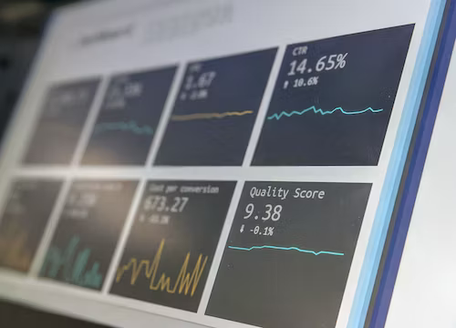

Apa itu sistem informasi?
Ditulis oleh trmldaa. Pada 25 Oktober 2023.
Sistem Informasi (SI) adalah sebuah sistem formal, sosioteknikal, dan organisasional yang dirancang untuk mengumpulkan, memproses, menyimpan, dan mendistribusikan informasi. Dari perspektif sosioteknis, sistem informasi disusun oleh empat komponen: tugas, orang, struktur (atau peran), dan teknologi. Sistem informasi dapat didefinisikan sebagai suatu integrasi komponen untuk pengumpulan, penyimpanan dan pemrosesan data. Data tersebut kemudian digunakan untuk menyediakan informasi, berkontribusi pada pengetahuan serta produk digital yang memfasilitasi pengambilan keputusan.
Sistem informasi komputer adalah sistem yang terdiri dari manusia dan komputer yang memproses atau menafsirkan informasi. Istilah ini juga terkadang digunakan untuk merujuk pada sistem komputer dengan perangkat lunak yang diinstal.
Sistem informasi dapat digunakan dalam berbagai konteks, termasuk bisnis, pendidikan, pemerintahaan, kesehatan, dan banyak lagi.
"Sistem informasi" juga merupakan bidang studi akademik tentang sistem dengan referensi khusus untuk informasi dan jaringan pelengkap perangkat keras dan perangkat lunak komputer yang digunakan orang dan organisasi untuk mengumpulkan, menyaring, memproses, membuat, dan juga mendistribusikan data. Dengan penekanan pada sistem informasi yang memiliki batas definitif, pengguna, prosesor, penyimpanan, input, output, dan jaringan komunikasi tersebut.
Dalam banyak organisasi, departemen atau unit yang bertanggung jawab atas sistem informasi dan pemrosesan data dikenal sebagai "layanan informasi".
Ada yang membuat perbedaan yang jelas antara sistem informasi, dan komputer sistem TIK, dan proses bisnis. Sistem informasi yang berbeda dari teknologi informasi dalam sistem informasi biasanya terlihat seperti memiliki komponen TIK. Hal ini terutama berkaitan dengan tujuan pemanfaatan teknologi informasi. Sistem informasi juga berbeda dari proses bisnis. Sistem informasi membantu untuk mengontrol kinerja proses bisnis.
Alter berpendapat untuk sistem informasi sebagai tipe khusus dari sistem kerja. Sistem kerja adalah suatu sistem di mana manusia dan/atau mesin melakukan pekerjaan dengan menggunakan sumber daya untuk memproduksi produk tertentu dan/atau jasa bagi pelanggan. Sistem informasi adalah suatu sistem kerja yang kegiatannya ditujukan untuk pengolahan (menangkap, transmisi, menyimpan, mengambil, memanipulasi dan menampilkan) informasi.
Dengan demikian, sistem informasi antar-berhubungan dengan sistem data di satu sisi dan sistem aktivitas di sisi lain. Sistem informasi adalah suatu bentuk komunikasi sistem di mana data yang mewakili dan diproses sebagai bentuk dari memori sosial. Sistem informasi juga dapat dianggap sebagai bahasa semi formal yang mendukung manusia dalam pengambilan keputusan dan tindakan.
Sistem informasi merupakan fokus utama dari studi untuk disiplin sistem informasi dan organisasi informatika.
Sistem informasi adalah gabungan yang terorganisasi dari manusia, perangkat lunak, perangkat keras, jaringan komunikasi dan sumber data dalam mengumpulkan, mengubah, dan menyebarkan informasi dalam organisasi.
Sistem informasi adalah suatu sistem di dalam suatu organisasi yang mempertemukan kebutuhan pengolahan transaksi harian, mendukung operasi, bersifat manajerial dan kegiatan strategi dari suatu organisasi dan menyediakan pihak luar tertentu dengan laporan-laporan yang diperlukan.
Terdapat empat langkah dalam membangun suatu sistem informasi, yaitu menentukan serta mengetahui masalah, menyediakan solusi alternatif, memilih solusi, dan mengimplementasikan solusi yang dipilih. Ketiga langkah pertama disebut sebagai analisis sistem.
Tujuan sistem informasi
Tujuan dari sistem informasi adalah menghasilkan informasi. Sistem informasi selalu melibatkan data-data penting dimana data yang diolah menjadi bentuk yang berguna bagi para pemakainya. Data yang diolah saja tidak cukup dapat dikatakan sebagai suatu informasi. Untuk dapat berguna, maka informasi harus didukung oleh tiga pilar sebagai berikut: tepat kepada orangnya atau relevan (relevance), tepat waktu (timeliness), dan tepat nilainya atau akurat (accurate). Keluaran yang tidak didukung oleh tiga pilar ini tidak dapat dikatakan sebagai informasi yang berguna, tetapi merupakan sampah (garbage).
.png)
komponen
Sistem informasi terdiri dari komputer, instruksi, fakta yang tersimpan, manusia dan prosedur sehingga dapat dikategorikan dalam empat bagian:
- 1. Sistem informasi manajemen
- 2. Sistem pendukung keputusan
- 3. Sistem informasi eksekutif
- 4. Sistem pemrosesan transaksi
Sumber / Selengkapnya:
https://id.wikipedia.org/wiki/Sistem_informasi